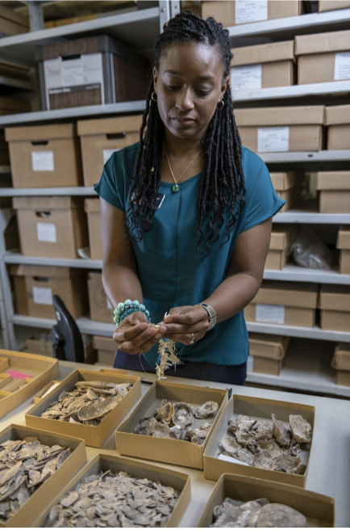

Announcements
Feb. 6, 2021Guest Speaker Nicole Cannarozzi: Environmental Archaeology, Collection Manager Florida Museum of Natural History
7PM VIRTUAL CLUB MEETING Live on YouTube

Archaeologist and collections assistant Nicole Cannarozzi was
appointed collections manager of the Florida Museum of Natural
History’s environmental archaeology program in 2018. She originally
started at the Florida Museum in 2004 as a faunal analyst after graduating
from the University of Florida with a bachelor’s degree in anthropology.
She’s worked with the museum in various positions over the past 14
years while completing her PhD. “The museum is one of the reasons I’ve stayed in
Gainesville,” said Cannarozzi, who was hired into her current
position in March 2018. “I’ve been lucky to work in one of the best
zooarchaeology labs in the country.” Cannarozzi said she wants to
focus on outreach, with a goal of recruiting more volunteers and
participating in museum-sponsored and external events to expose more
people to environmental archaeology. “I’m very happy, it’s my dream
job,” Cannarozzi said. “I really like the integrated nature of the
museum where you have many departments and disciplines under one
roof. That kind of atmosphere fosters communication and
collaboration that is so important for our research.”
The Florida Museum environmental archaeology program was established
in 1961. Its researchers use soil and animal and plant remains from
archaeological sites to better understand past human interactions
with the natural environment.
Tampa Bay Fossil Chronicles
Hopefully you’ve noticed that TBFC has stepped up its game with
the newsletter each month. In addition to all of our regular
contributors, we’ve added two new recurring articles this season. “In
Touch with Inverts” by Rob Carlson was added in September. In
this issue, “Paleo Analysis” by Steve Vicari debuts.
Each month Steve will be discussing interesting prehistoric fauna and how they
relate to extant species.
Please check out all of the articles in each
issue. Only TBFC members receive the Chronicles, we don’t post it online or on Facebook.
FossilFest 2021 has been cancelled. As analternative the club will be hosting an outdoor Swap Meet event!